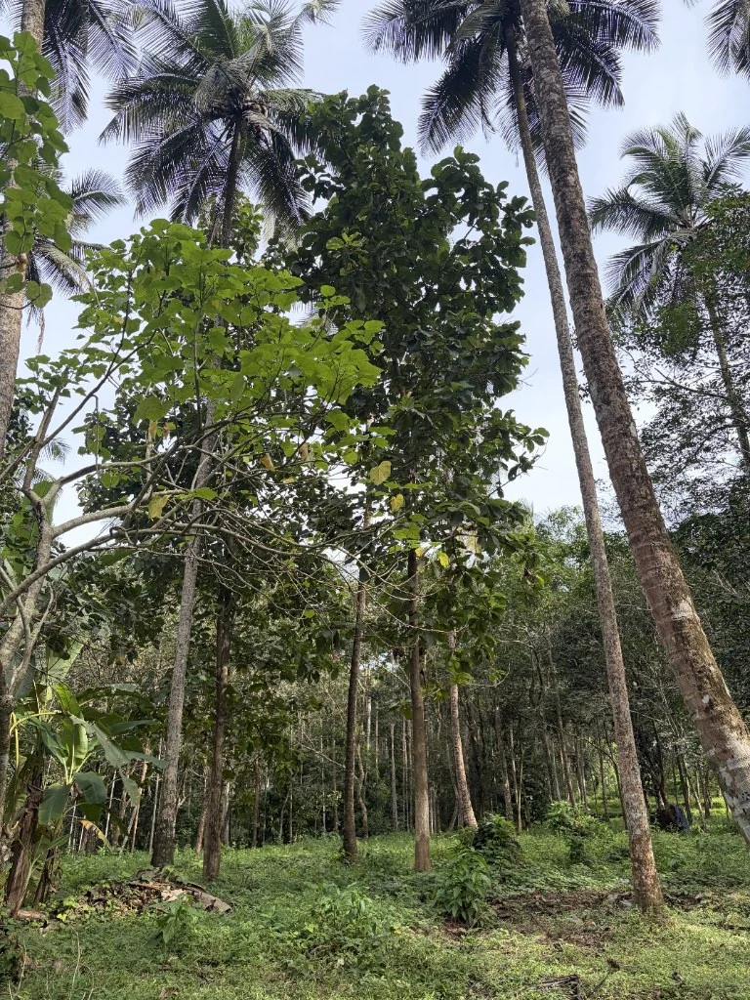
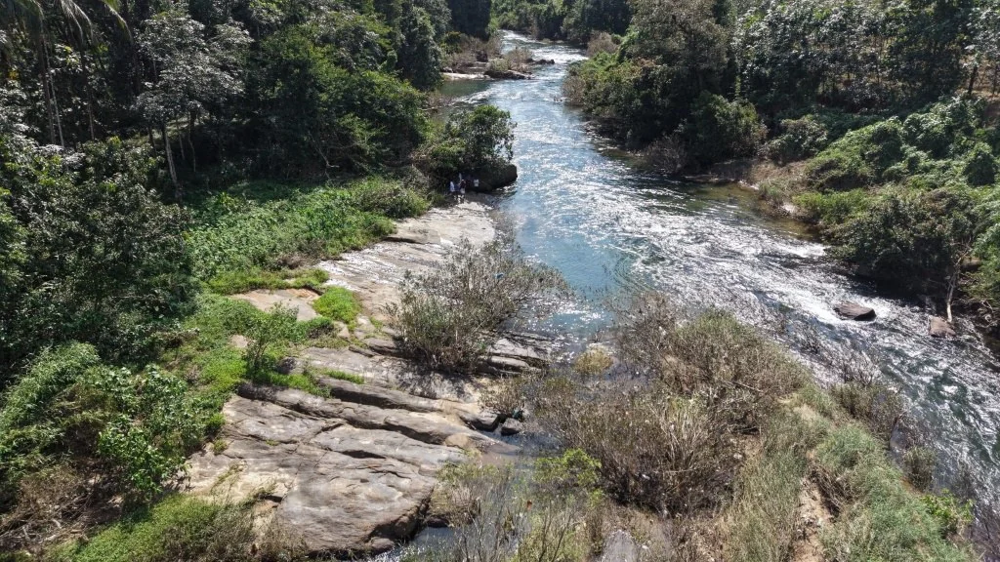
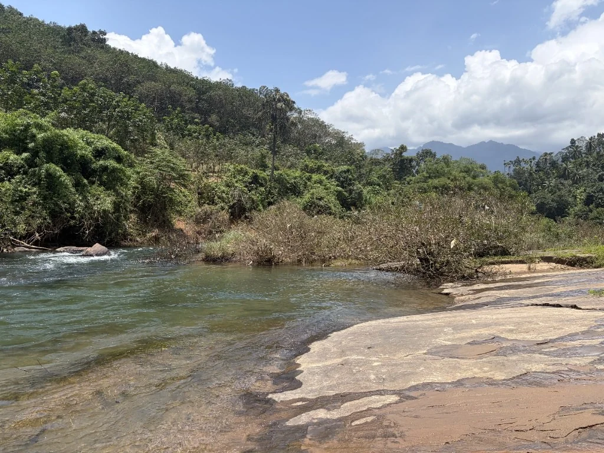

Location
Close to town. Closer to nature.
Athipara near Thiruvambady offers a green foothill setting while retaining practical access to Kozhikode and the airport.
Location matrix
Well placed for escapes and everyday access.
Thiruvambady Town4 km
Kozhikode City40 km
Calicut Intl. Airport (CCJ)37 km
Lakkidi View Point (Wayanad Gateway)25 km
Wayanad Tunnel Project Entry Point12 km
Distances are approximate and may vary by route and traffic.

Site location
Athipara, Thiruvambady, Kozhikode
Open the project pin in Google Maps for directions and route planning.
View on Google Maps ↗Visit in person
The best way to understand Neeranjali is to walk it.
Schedule a private site visit to experience the approach, water edges, terrain and surrounding greenery first-hand.
Book a site visit →